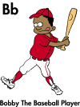

|  |
Typical alerts might be the receipt of new mail, beeps to indicate system errors, or sounds to indicate a change in status. Techniques Use one or more of the following techniques to meet Checkpoint 3. Windows application developers should check the ShowSounds flag by calling the SystemParametersInfo function with the SPI_GETSHOWSOUNDS value, and if set, present visual equivalents of all audio information. Add an option in user preferences, or provide a means for user to turn on visual cues for audio alerts. text, Windows MessageBox) Display a status indicator on the notification area of the taskbar that flashes when initially displayed to attract the user's attention. |
|
Typical alerts might be the receipt of new mail, beeps to indicate system errors, or sounds to indicate a change in status. Techniques Use one or more of the following techniques to meet Checkpoint 3. Windows application developers should check the ShowSounds flag by calling the SystemParametersInfo function with the SPI_GETSHOWSOUNDS value, and if set, present visual equivalents of all audio information. Add an option in user preferences, or provide a means for user to turn on visual cues for audio alerts. text, Windows MessageBox) Display a status indicator on the notification area of the taskbar that flashes when initially displayed to attract the user's attention. |